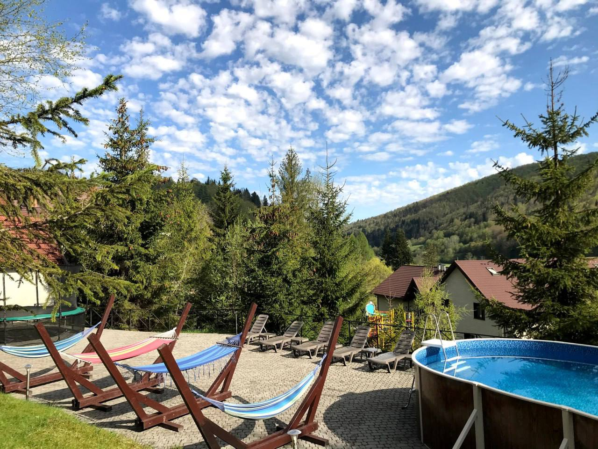
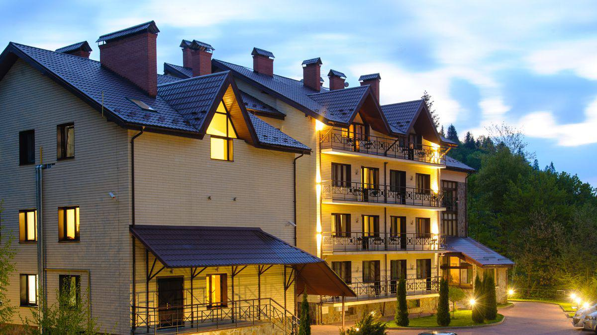
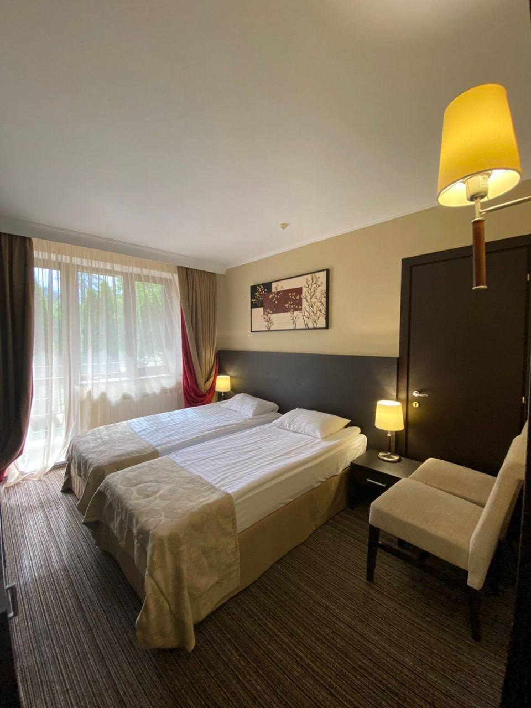
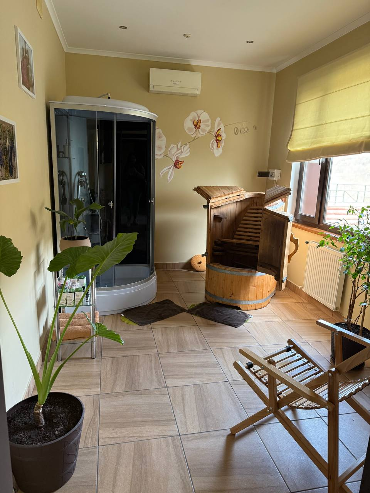
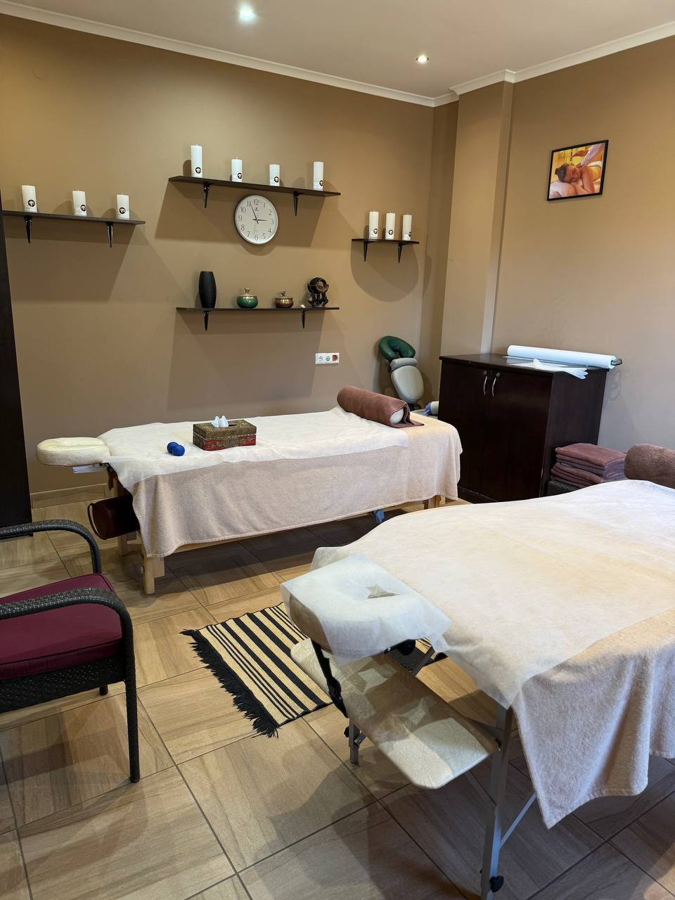
 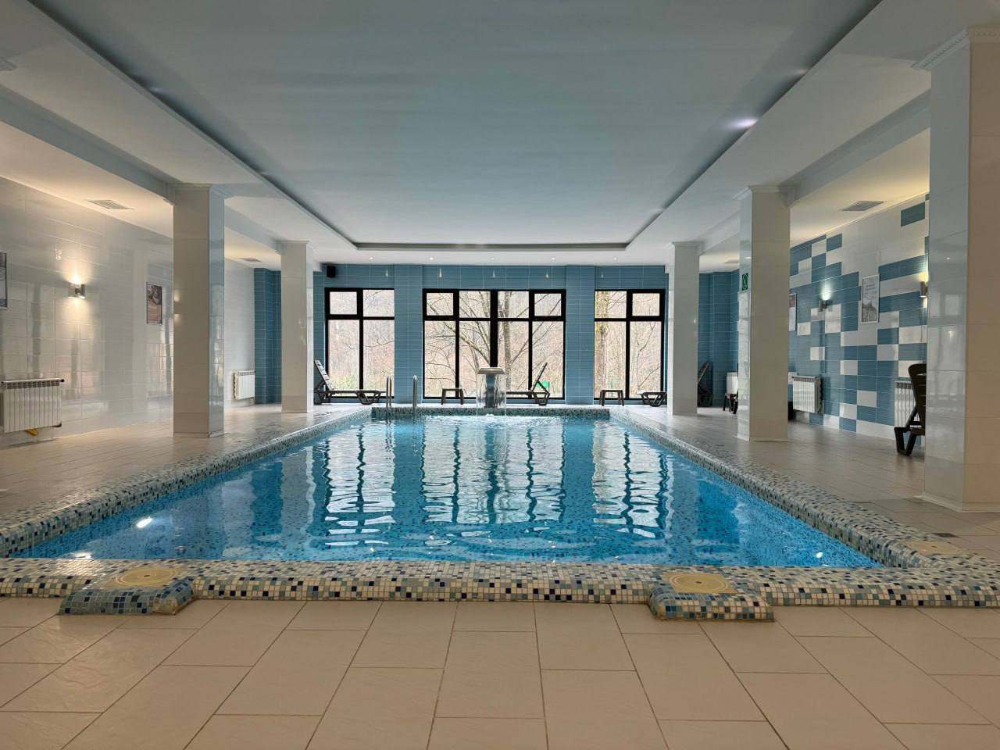
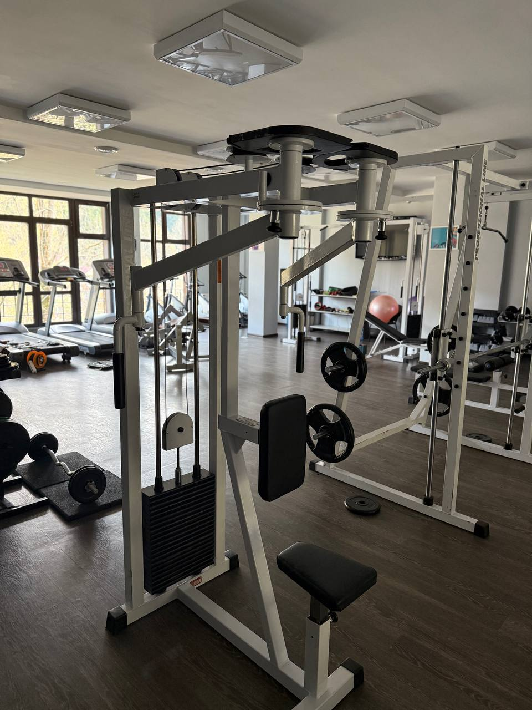
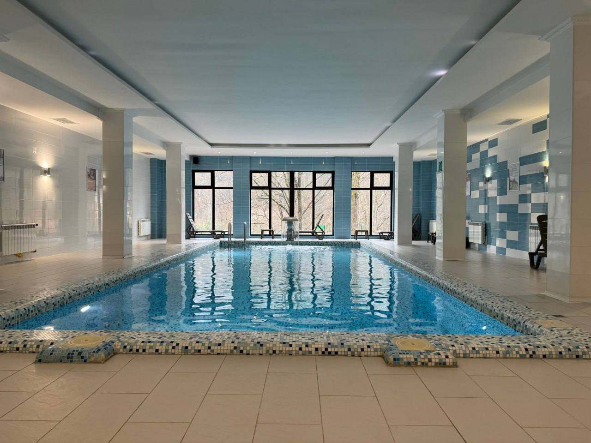
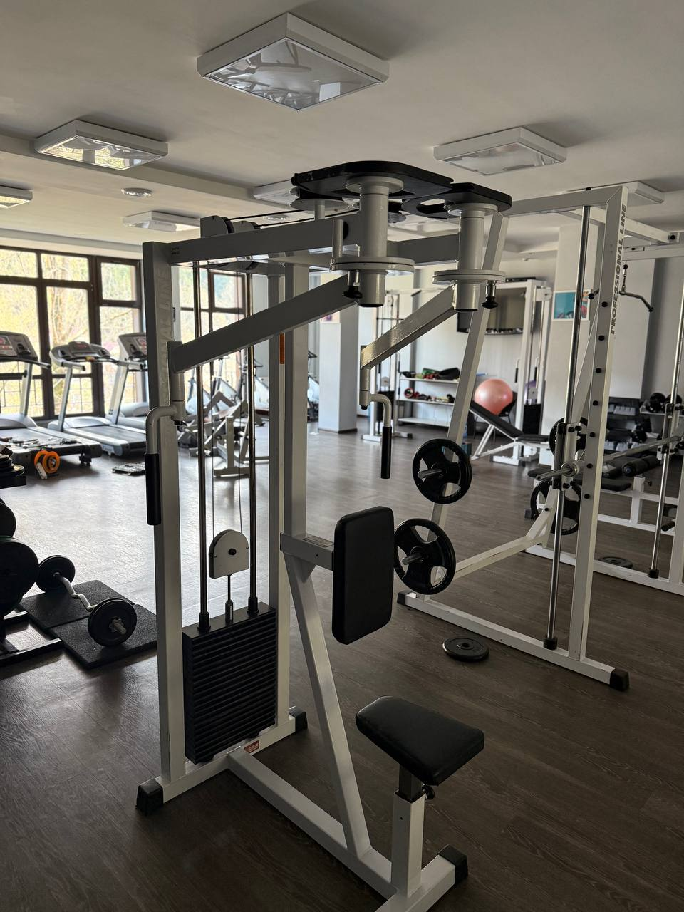
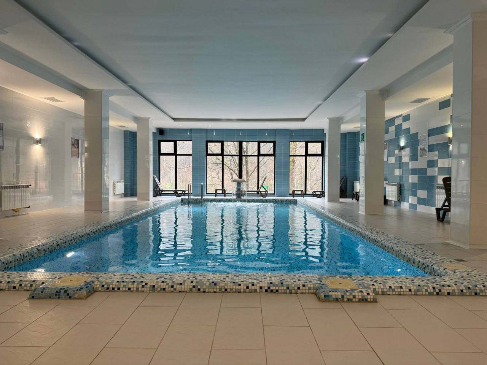
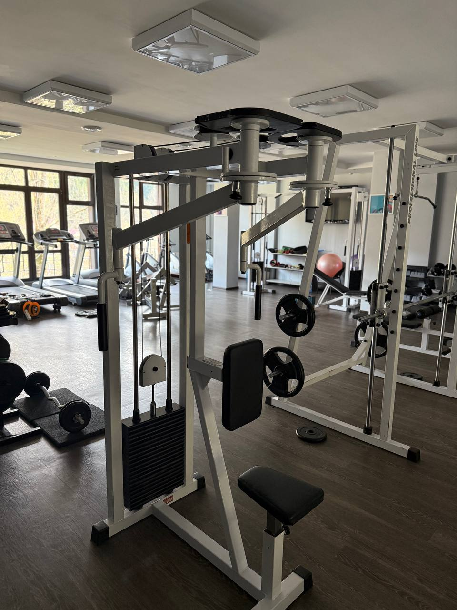
12.08–16.08 | Все включено | Повне перезавантаження та відновлення душі і тіла
ЗАБРОНЮВАТИ СВОЄ ВІДНОВЛЕННЯ
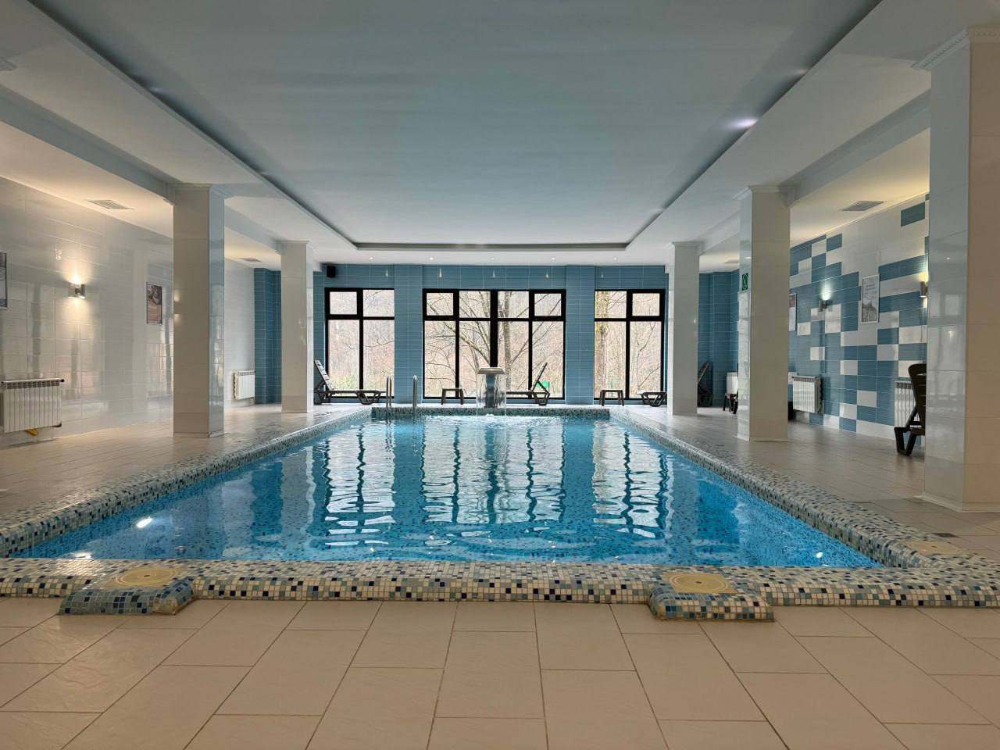
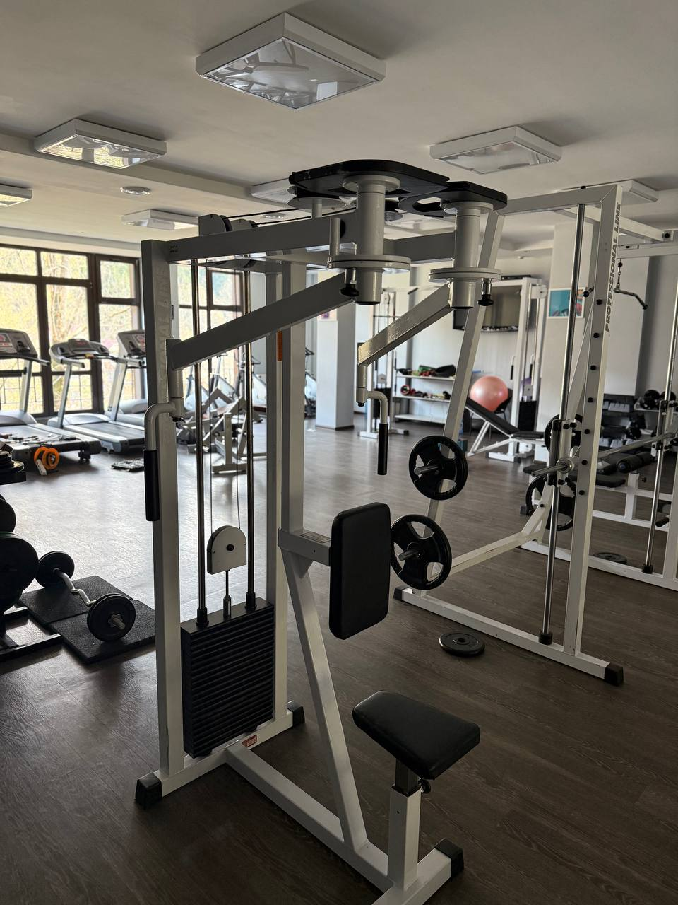
Поки мами насолоджуються спокоєм, практиками й часом для себе — діти вирушають у власну пригоду, повну веселощів, творчості й нових відкриттів. Для них ми підготували цілий світ активностей!
Лабіринт — м’який тунель з перешкодами, Аерохокей та настільний футбол, PlayStation-зона, Покази мультфільмів на великому екрані в затишному форматі.

Нутриціолог, психолог, health-коуч. Авторка освітнього тг-каналу «Шлях до здоровʼя». Ведуча трансформаційної гри «Ліла». Комплексний підхід до здоровʼя через тіло, психіку та емоції.
Нутриціолог, health-коуч, гіпно-коуч, інструктор з йоги, провідник на цвяхах. Авторка програми Restart для зниження зайвої ваги через поєднання нутриціології та роботи з підсвідомістю.

Health-коуч, марафонець і спортивний нутриціолог. Моє захоплення — біг, але для мене це значно більше, ніж спорт. Це про шлях, процес, глибину змін не лише зовні, а й всередині.

Після 17.05 ціни зростають! Наявність місць уточнюємо індивідуально (літній пік сезону). Плануй заздалегідь!
! Зверни увагу !
Передплата одразу вноситься отелю і не повертається у разі твоєї відмови від поїздки
(повернення можливе тільки у разі, якщо на твоє місце знайдеться інша учасниця )
Для орієнтиру вартість участі мами + дитини від 6 років:
17999+13816 грн= 31815 грн за всі 5 днів включно з харчуванням і проживанням.